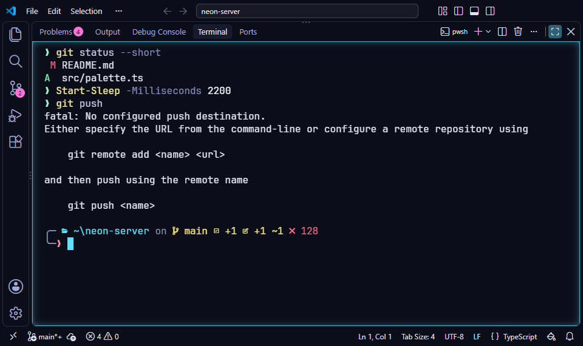
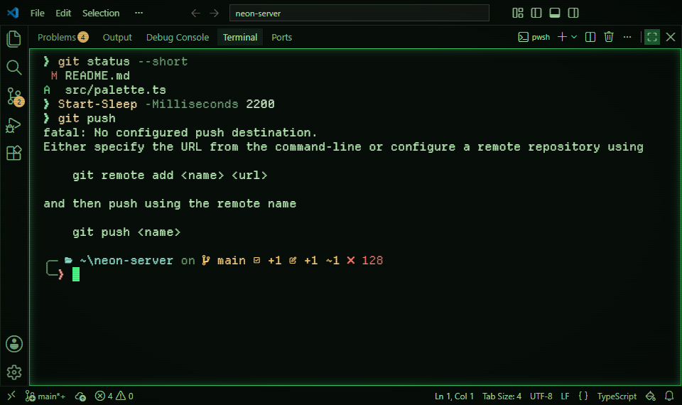
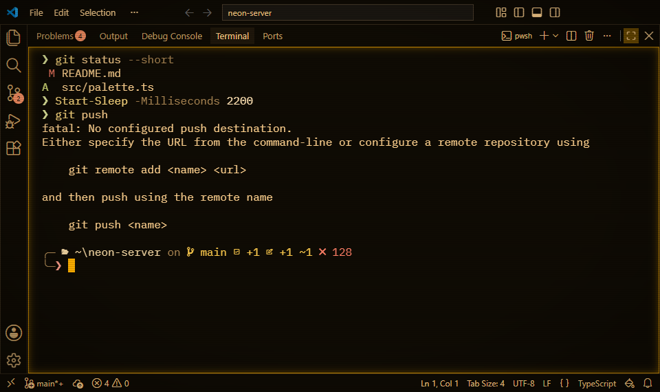
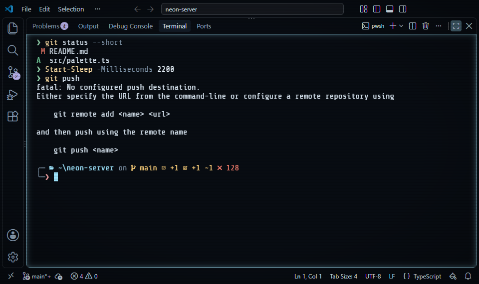
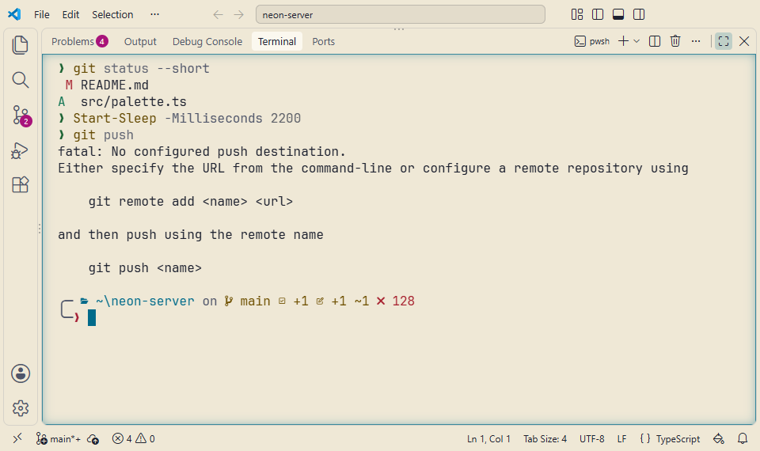

Oh My Posh
Sync your terminal prompt with your active VS Code theme. The official Stylesmith Oh My Posh configuration matches your current palette automatically.
How it works
Oh My Posh is a custom prompt engine for any shell. The included
stylesmith.omp.json configuration colors the prompt with
your terminal's 16 ANSI colors, and every Stylesmith theme defines them.
In VS Code's terminal, the prompt takes on the active preset's palette,
and follows when you switch.





Installation
-
1. Install Oh My Posh
Follow the official Oh My Posh documentation for your specific operating system to install the core engine.
-
2. Get the Stylesmith theme
Download the official configuration file to your home directory.
curl -O https://raw.githubusercontent.com/21010/stylesmith/main/extras/oh-my-posh/stylesmith.omp.json -
3. Configure your Shell
Set Oh My Posh to use the downloaded theme. For PowerShell, add this to your
$PROFILE:oh-my-posh init pwsh --config ~/stylesmith.omp.json | Invoke-Expression